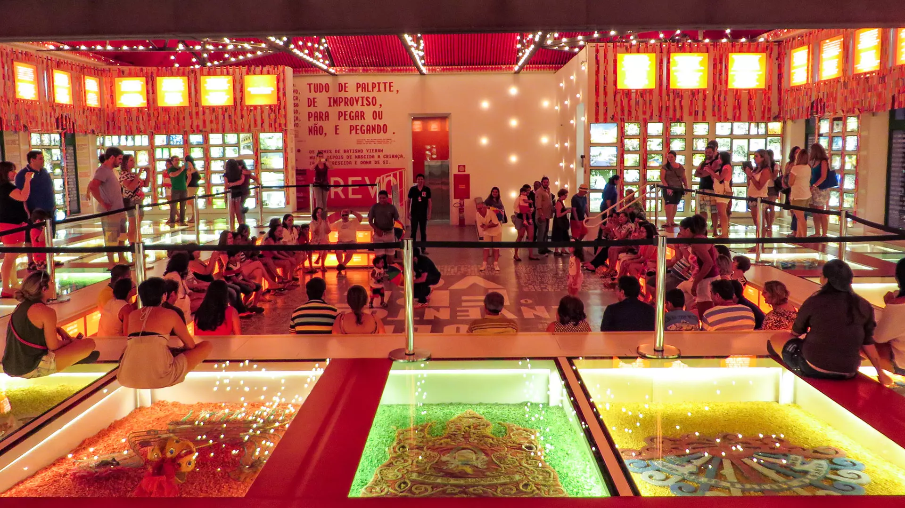
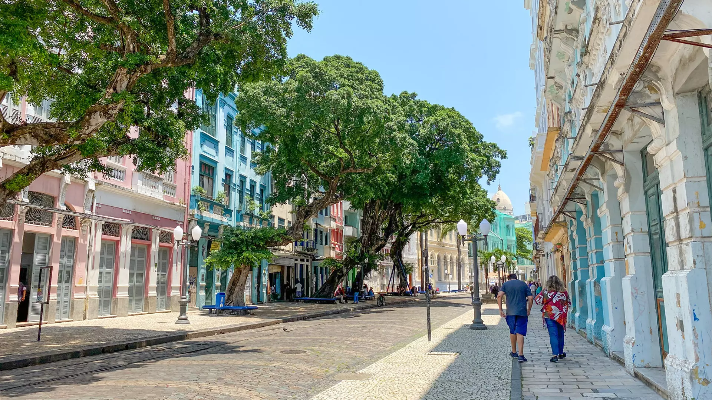
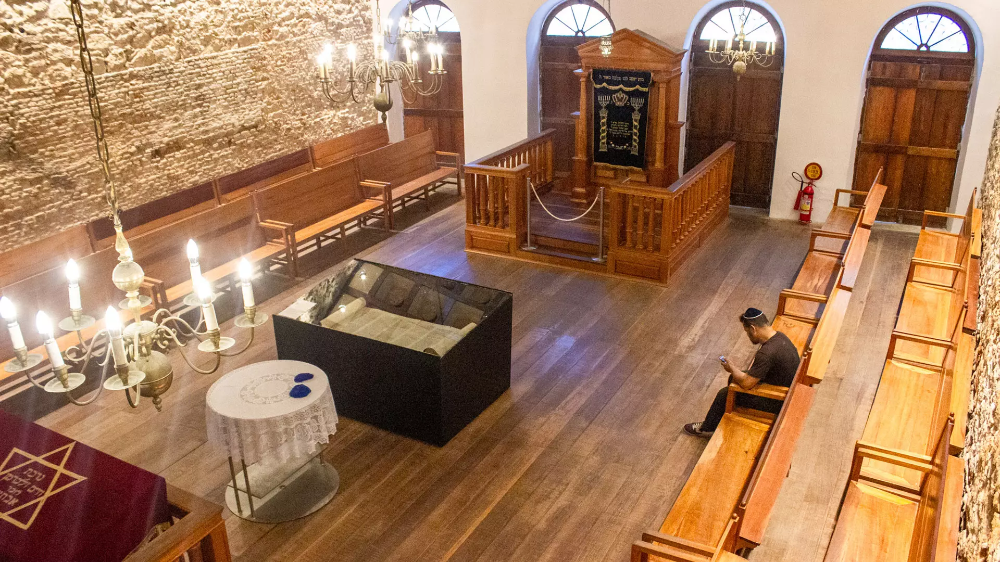
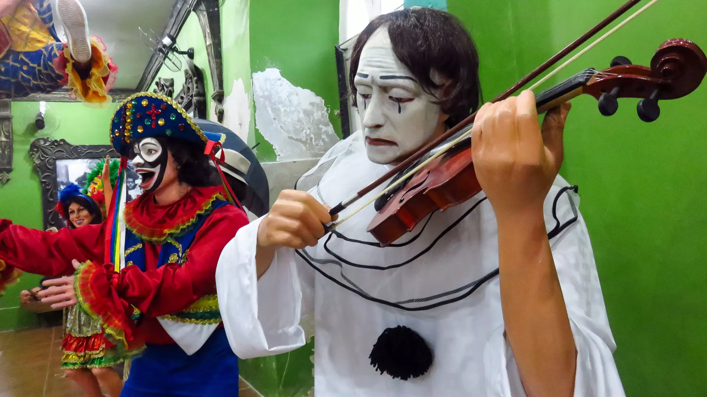
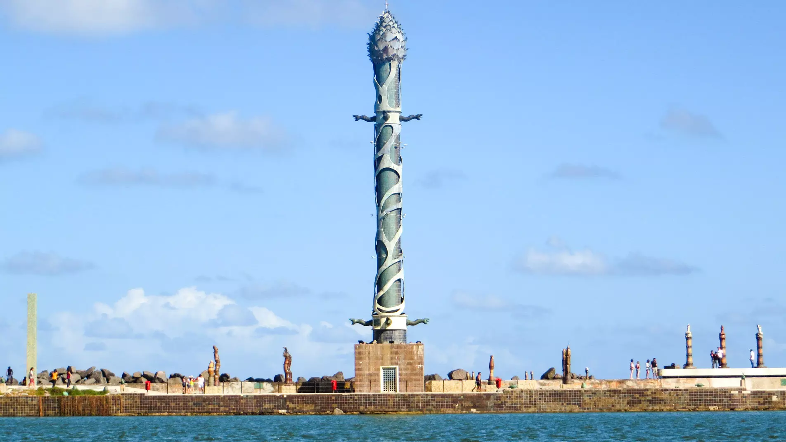

Cais do Sertão

Inaugurado em 2014, o Cais do Sertão é um museu que celebra a cultura sertaneja a partir da figura de Luiz Gonzaga. A exposição principal, “O Mundo do Sertão”, envolve o visitante em todos aspectos da vida sertaneja. “Um Rio São Francisco” flui ao longo do pavilhão, passando por sete “territórios”: Ocupar, Viver, Trabalhar, Cantar, Criar, Crer e Migrar. O território “Cantar” fica no coração da instalação, e é onde Gonzagão e o baião estão mais presentes. Estações interativas, incluindo karaokê no estúdio de gravação, vão se sucedendo durante a visita. O acervo inclui curta-metragens de Kleber Mendonça Filho e Lírio Ferreira, e xilogravuras do mestre J. Borges. No fim da visita, dê um pulinho no rooftop e tomar um drink ao pôr do sol (para garantir uma mesa, reserve com alguns dias de antecedência).
Paço do Ferro

O Paço do Frevo também foi aberto em 2014. Funciona num elegante prédio de 1908 onde funcionou a cia. inglesa Western Telegraph, então concessionária do cabo telegráfico entre a Europa e Pernambuco. O nome é um jogo de palavras entre “paço” (palácio em português arcaico) e “passo” (movimento de dança), conferido status de majestade ao frevo, o ritmo mais reverenciado do Recife. A exposição permanente explica as origens e conta a história do frevo ao longo de muitos carnavais. O último andar expõe estandartes de troças e blocos, e funciona como anfiteatro para demonstrações e aulas de frevo. Veja na programação se você consegue encaixar alguma atividade na sua visita.
Rua do Bom Jesus

Cartão-postal do Recife Antigo, a Rua do Bom Jesus entrou para o roteiro dos instagramers depois que apareceu no 3º lugar de uma lista de ruas mais bonitas do mundo da revista Architectural Digest, em 2019. A rua já teve vários nomes. Nos primórdios da cidade, era conhecida como Rua do Bode. Depois da instalação da Sinagoga Kahal Zur Israel se tornou Rua dos Judeus. Ao fim do domínio holandês, com a consequente expulsão dos judeus, foi rebatizada (de maneira vingativa!) Rua da Cruz. Só em 1870 ganhou seu nome atual, Rua do Bom Jesus, em memória do Arco do Bom Jesus que havia na rua e foi demolido. Correndo paralela à avenida do porto, a Rua do Bom Jesus leva das proximidades do Marco Zero à Praça do Arsenal. Serve de endereço para duas atrações do Recife Antigo: a Sinagoga Kahal Zur Israel e a Embaixada de Pernambuco-Bonecos de Olinda. A rua também tem um lugar muito simpático para fazer um lanche com sabor nordestino: o Café Bom Jesus.
Sinagoga Kahal Zur Israel

A Sinagoga Kahal Zur Israel (“Rochedo de Israel”, em hebraico) é a mais antiga das Américas. Funcionou durante o domínio holandês em Pernambuco, entre 1630 e 1654. Era frequentada pela comunidade de 400 judeus sefaraditas que tinham emigrado da Holanda. Depois da expulsão dos judeus - que foram se refugiar em Nova Amsterdã, futura Nova York - a sinagoga foi desativada. Só reabriu, depois de extensa restauração, em 2012. O local hoje abriga o Arquivo Histórico Judaico de Pernambuco e está aberto à visitação. A maior relíquia exposta é o mikvé - uma piscina com degraus onde eram realizados rituais de purificação. No piso superior foi reconstituída uma sinagoga ao estilo das de Amsterdã e Curaçao - que funciona apenas como museu, sem a realização de cerimônias religiosas.
Bonecos gigantes de Olinda

Se você não vai a Olinda, os Bonecos Gigantes vêm a você. Há três endereços no Recife Antigo com bonecos expostos. Na Rua do Bom Jesus, a Embaixada dos Bonecos Gigantes de Olinda tem um salão repleto de celebridades transformadas em bonecos. Na Praça do Arsenal, a Embaixada de Pernambuco tem uma exposição mais abrangente de folclore pernambucano, incluindo alguns boneco. E mais recentemente o bairro ganhou o Casarão - Bonecos Gigantes de Olinda, na Rua da Guia - uma filial da Casa dos Bonecos Gigantes e Mirins de Olinda. Caso você pretenda visitar a Casa dos Bonecos Gigantes e Mirins em Olinda não precisa visitar nenhuma das três no Recife.
Parque de esculturas Francisco Brennand
